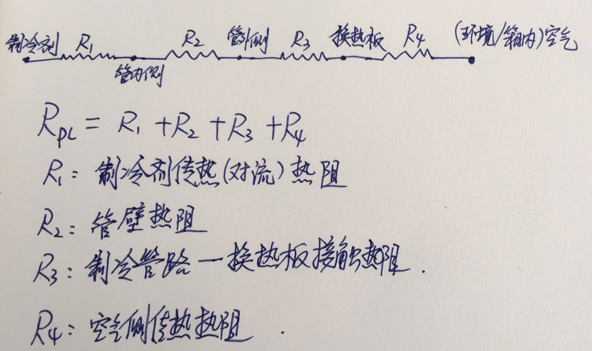

第二章 冰箱换热器设计
本章所述换热器，主要指冰箱的冷凝器和蒸发器,一种装在冰箱的外表面向环境排放热量，一种装在冰箱内部吸收箱内的热量，两种用途的换热器都是间壁式换热器，间壁内外侧换热介质为制冷剂和空气，在蒸发器和冷凝器正常工作时，冷凝器内发生的是气-液相变的过程，伴随着潜热的释放;蒸发器内是液-气的相变过程，伴随着潜热的吸收。由于制冷剂侧使用相变传热，大幅减小了换热器的制冷剂侧热阻，从而使冰箱的换热器体积大幅缩小，成为一件人工就能搬的动的家用电器。
根据空气侧的流动特点分为强制对流（风冷）和自然对流（直冷）,常见类型有：
1 Plate-Tube 板管式
2 Fin-Tube 平直翅片式
3 旋翅式
3 Wire-Tube 丝管式
4 louver fin and flat tube 百叶窗扁管式（微通道式）
综合来看冰箱系统使用的换热器，其主要特征如下：
- 1、冰箱产品的热负荷都不高，传热温差一般都需要控制在10C 以下,在能耗测试工况下甚至传热温差要低于5C。
- 2、制冷剂侧有相变（冷凝/沸腾）传热，传热系数远高于空气侧。
- 3、空气侧传热系数较低，即使是强制对流的风冷换热器，传热系数也比制冷剂侧低两个数量级，一般都在30以下，空气侧传热面积远大于制冷剂侧。
- 4、制冷剂管路较细，内管水力直径一般在2～8mm之间。
- 5、制冷剂工作压力不高，但对防腐蚀性能要求很高，要求焊点尽量少。
- 6、要求体积小，换热面积大，需要满足苛刻的容积和耗电量指标要求。
本章首先从传热学基本概念入手，描述冰箱换热器的性能，介绍分析换热器性能的理论和实验方法，最后介绍冰箱换热器的设计原则和优化方法。
1 换热器的基本概念
1.1 热阻
类比欧姆定律：
热阻定义为：
根据傅里叶定律：
则导热过程的热阻可以写为：
根据牛顿传热定律：
h为对流传热系数，A为总传热面积,则有：
一个具体的传热过程，可能既有传导，又有对流和辐射，整个热流输送的过程用热阻的串并联来表示，例如制冷管道的传热热阻为：

带翅片管的热阻：

其中制冷剂管内传热热阻为：
制冷管路管壁热阻为：
管壁热阻太小一般都忽略。
为翅片与管道的接触热阻，由于我们所用的翅片与管道都是使用挤压或者焊接工艺，此项一般忽略。
翅片与空气热阻:
其中为翅片效率。
管道与空气热阻：
则在忽略管壁热阻和翅片管接触热阻之后有：
我们常用的自然对流板管式
1.2 流动阻力
制冷剂在管内流动，会产生摩擦阻力，会使压缩机耗功增加，系统COP降低，根据流体摩擦阻力公式，管道长度越长，制冷剂侧流动阻力就越大。
压缩机的质量流量为：
管道平均流速
则冰箱制冷剂侧管内的流动阻力可以表达为：
: Darcy friction factor
由上式看出，在压缩机选型和工况相同时，制冷剂流动阻力和所用管道水力直径的4-5次方成反比，冰箱的制冷剂管路越细，则管道流动阻力迅速增加，因此冰箱所用管路，尤其是液相比例高的蒸发器，一般都采用较粗的管路。
而对于换热器的空气侧，如果为强制对流，则也需要考虑流动阻力的问题，因为风道系统如果因为换热器的空气侧阻力太高，会使系统的总通风量降低，系统换热量下降，使制冷系统的工况变差，系统COP降低。如图所示，I,II,III 为风道系统阻力曲线，从I至III，系统阻力递减，则相依风量依次提高。
其中为翅片总面积与盘管空气侧面积的比值，为盘管排数。
一般来讲，盘管排数越多，翅片越密，流速越快则流动阻力越大。虽然管道越长，翅片越多，则换热面积越大，但考虑到流动阻力的增加，对制冷系统的作用不一定都是正面的。
1.3 努塞尔数和因子
努塞尔数表征了换热器表面的对流换热与导热之间的差异，其定义为：
在调整多项参数测量完换热器的换热量后，需要把数据整理成Nusselt数与各种无量纲数之间的经验公式，例如斜插式换热器的空气侧传热性能可以表示为：
使用努塞尔数可以很方便地计算换热器的在变工况下的实际性能参数。
在技术文献中，经常可以看到另一种无量纲因子表示法：
而
则可以得到关系式为：
由于冰箱换热器的换热性能和空气侧流动性能都非常重要，在相关研究换热器文献中，一般都会给出努塞尔数和f因子,或者,因子的数据和拟合结果。
1.3 换热面积的扩展与翅片效率
我们通常使用的间壁式换热器的管道一般为圆管，圆管的几何特征就是周长最小的时候获得最大的截面积，所以圆管的内部和外部传热面积都很小，直接使用圆形管路来当换热器是非常不经济的,使用其它形状的管道，在水力直径不变的条件下，其管内和管外的换热面积会略有增加，但也远远达不到理想的强化传热的效果。
水力直径的定义：
为了增大换热面积，最常用的方法就是对管道进行肋化，即增加翅片，用焊接、粘接和挤压的方法将翅片和管路紧密连接在一起，使接触热阻最小化，虽然翅片与传热流体之间的温差要小于管道与传热介质之间的温差，但由于翅片面积远大于圆管的外表面积，并且翅片也可以保证很高的效率，增加翅片能够获得大幅的换热面积的提升。
翅片效率的定义：
上式可以理解为：由于翅片与传热流体间的温差小于管道与传热流体之间的温差，为了方便计算，假设翅片面积与传热流体间的温差等于管道与流体间的温差，那么计算传热面积时翅片面积需要打得折扣就是翅片效率。
以空气侧传热为例，对于方形平板翅片，其翅片效率为：

由于通常翅片都很薄，即，则m可以简化为
为无量纲数，翅片效率随值大小变化如图，虽然加长翅片可以增大翅片换热面积，但可以看出，翅片越长效率越低，所以在进行换热器设计时，要根据计算结果选择合适的翅片高度和效率，冰箱换热器一般要求翅片效率在85%~90%之间。

2 冰箱换热器的结构与性能
在设计一款新冰箱时，需要通盘考虑结构、制冷和电气等模块的设计，制冷系统不仅要实现小型化，少占空间，还要能够实现较强的换热能力，这就对制冷系统的换热器的设计提出了非常高的要求。
理想的换热器设计目标为：
- 低热阻
- 占据冰箱的箱内空间少
- 制冷剂侧摩擦阻力小，压缩机耗功低
- 空气侧阻力小系统风量大，风机消耗功率低
- 材料消耗少，成本低
为了实现以上目标，在实际设计中，必须理解换热器的结构及其物理性能之间的关系，作出正确的取舍，实现性能、结构和成本之间的平衡。
2.1 换热器的热阻构成
无论是自然对流换热器还是强制对流换热器，其总热阻都可以表示为一个热阻网络图，主要包括“制冷剂-管内壁热阻”、“管壁热阻”、：“管道-翅片接触热阻”、“管外侧-空气对流热阻”，“翅片-空气对流热阻”等几部分。（注意翅片指起到增加空气侧传热面积的表面，如侧板冷凝器的侧板也可称之为翅片）那么这么多热阻构成部分，究竟哪块的热阻是最大的？在实际的设计中，应当怎样去优化热阻，获得最高的性价比呢？

板管式换热器热阻
在换热器设计当中，优化占比最大部分的热阻，才能够获得较好的强化传热效果。在冰箱用的换热器中，由于管壁很薄，忽略不计，由于管道和翅片（平板）都是使用挤压或者粘接的方法进行连接，其接触热阻一般都在1%以下，所以在计算中也不出现，对于冰箱产品使用的小型换热器，那就是强化空气侧传热热阻（),以下将用实例介绍板管式换热器和翅片式换热器的热阻分析实例：
取板管式换热器一个最小的换热单元，管道长度为1m，管道规格为，平板尺寸尺寸为，管内制冷剂侧传热系数为： ,自然对流空气侧传热系数,则总热阻计算如下：
计算所用参数：
| 名称 | 代数符号 | 单位 | 数值 | 备注 |
|---|---|---|---|---|
| 管道长度 | 1 | |||
| 翅片长度 | 1 | |||
| 翅片高度 | ||||
| 翅片厚度 | ||||
| 管道内径 | ||||
| 管道外径 | ||||
| 管道内部传热面积 | ||||
| 空气侧翅片面积 | ||||
| 铝合金导热系数 | ||||
| 制冷剂侧传热系数 | ||||
| 空气侧传热系数 | ||||
| 翅片效率 | ||||
| 空气侧总传热面积 | ||||
| 制冷剂侧传热面积 | ||||
| 制冷剂侧热阻 | ||||
| 空气侧热阻 | ||||
| 总热阻 | ||||
| 制冷剂侧热阻占比 | ||||
| 空气侧热阻占比 |
2.2 肋化传热设计
2.3 风冷换热器的空气侧传热因子与摩擦因子
2.4 换热器性能与整机性能之间的关系
2.5 换热器性能的检测方法
3 常见换热器的设计思路
3.1 板管式
3.2 平直翅片式
3.3 旋翅式
3.4 微通道（口琴管+百叶窗）
4 换热器的优化设计思路
气液式换热器
制冷剂侧传热系数高
空气侧传热系数大
水力直径
热阻/UA
传热面积与传热面积密度
传热温差
翅片效率
制冷剂侧流动阻力
计算公式，管内流动阻力和水力直径的关系
制冷剂侧传热系数
空气侧阻力
空气侧传热系数
冰箱换热器的性能
冰箱换热器的热阻分析
冰箱换热器的流阻分析
翅片效率分析
换热器综合性能与整机性能的关系
测量和分析换热器性能的方法
风洞测试法
工况分析法
换热器的设计
优化冰箱换热器性能的途径
扩大设计容量
增大体积
增大传热面积密度
提高空气侧传热性能
降低材料成本
节省管道长度
缩小管径
降低翅片厚度